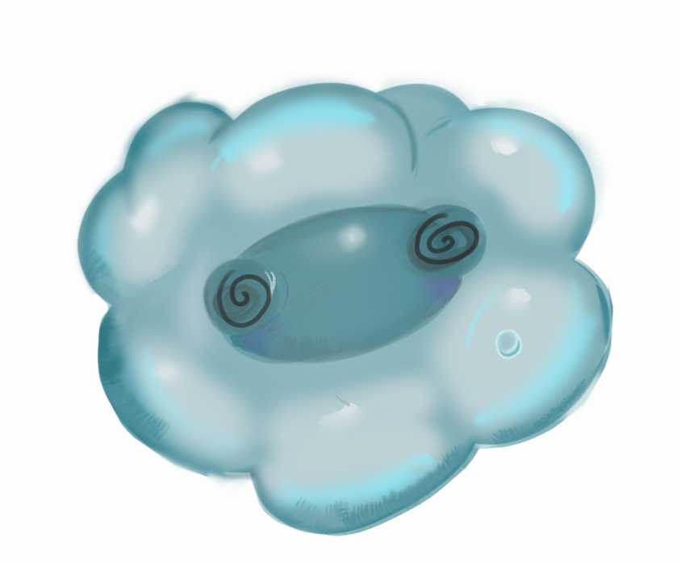
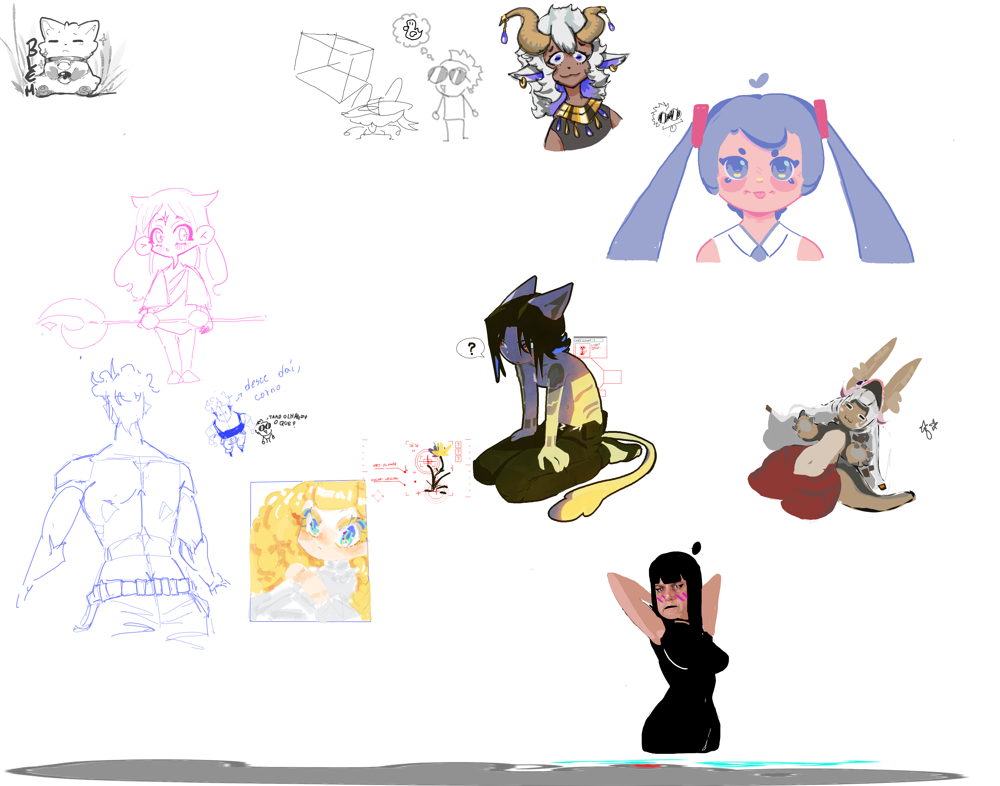
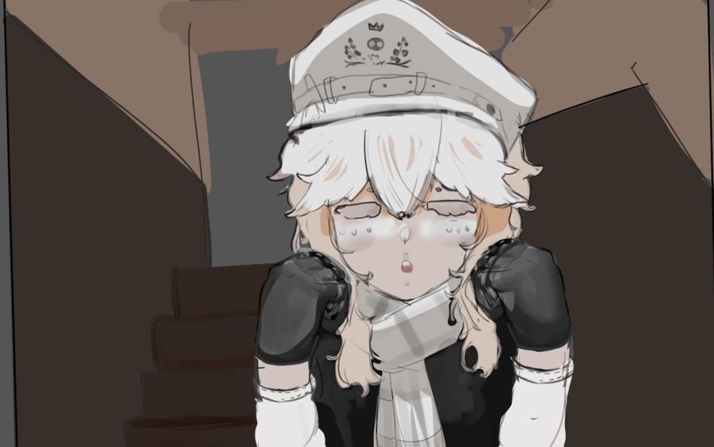
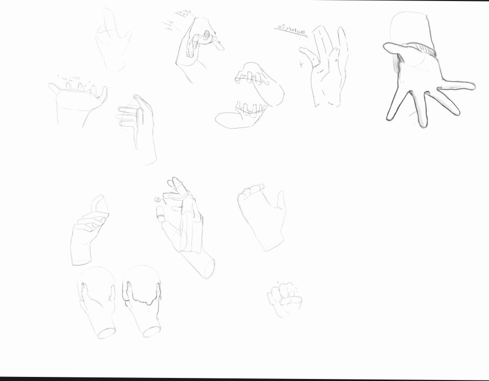
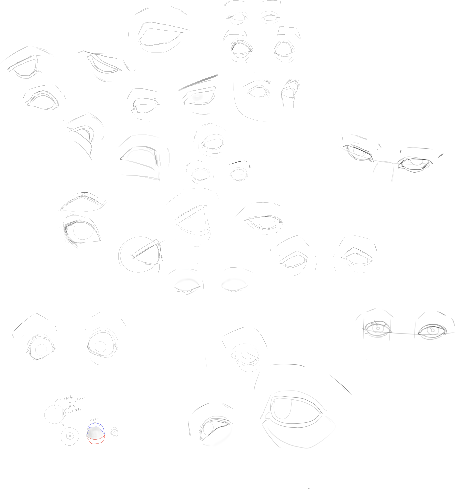
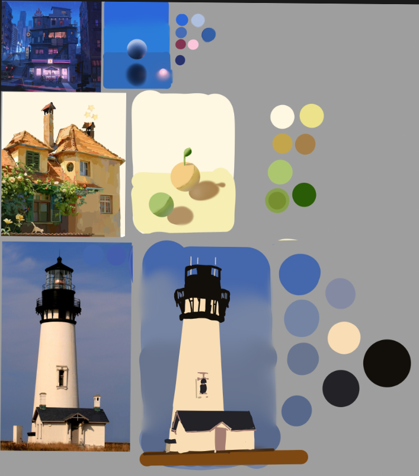

💙t💚e💙a💚m💙o💚
espero não estar sendo chato, mas eu queria muito te mostrar o quanto eu
estou melhorando, então decidi criar esse site MUHAHAH
DIA 20 ADICIONADO!!!
ja se passou quase um mêsss bueeee
Primeiro mês
Dia 1
No mesmo dia que aquilo aconteceu, eu fiquei muito deprimido e com
bastante saudade e inquieto sobre o futuro, depois da conversa que
tivemos
eu decidi continuar com o objetivo de nos conhecer pessoalmente
(entretanto chorei mtt KKKKKK 💙)
♥ BUEE ♥
Dia 2
segundo dia, eu acordei e fiquei pensando sobre o que aconteceu
fiquei
bastante encucado, decidi ir na padaria comprar alguma coisa para
comer,
comprei bolo e sonho salgado, tava muito gostoso, e com o dinheiro
que
sobrou eu paguei a net do celular, e terminei a trilha do curso que
eu
seguia. Falei também com a secretaria da faculdade e eles
encaminharam
minhas solicitações como em alta prioridade mas não sei se vai dar
certo...
saudades de ti BUEE
Dia 3
De madrugada umas 1h da manhã fiquei acordado desenhando um pouco 💔

meus desenhos ficaram um pouco tristes bueeee, man sendo aberto sobre
meus
sentimentos, eu realmente te amo slkkk BOCÒ BLEHHHHH . Fora isso não
houve
nada de interessante, além do aniversário de um professor meu, o Tomu
aqui, o
desenho

fiz na pressa também AKAKAKK soryyy
Dia 4
prática de hoje

MANO eu mandei msg pra vc porque eu tava ansioso, não quero que vc me
esqueça então acabei sendo mais ansioso vei ARRGGGGG. cof cof, depois de
falar com vc eu recuperei bastante da minha energia e motivação, fiquei
super feliz manoo!!! eu espero que esteja tudo bem com vc nesses dias e
sua família também, e não desista de nos, eu irei continuar tentando,
joguei um pouco com uns colegas, descobri que dá pra estudar usando uma
IA que faz perguntas, vai facilitar muito, eu mando o arquivo da
faculdade e estudo por ela, é incrível, eu achei que a IA é bom pra
estudar sendo um autodidata, mas ainda tenho minhas relutâncias, bom
chega de falar de mim, eu me pergunto como vc está... está bem? deve
estar sendo duro fazer tudo isso, mas conhecendo vc deve estar se
divertindo bastante também!! AKKAAK, eu espero que sim, a situação não
está uma das melhores, mesmo assim se esforçe, eu decidi criar esse
site, porque seria uma maneira fofa de te mostrar por quanto eu estou
melhorando nos meus objetivos, vai demorar para vc ler tudo isso KAKAKAK
isso prova que eu estou realmente anotando, hmm novidades? witch hat
atelier lançou anime e eu fiquei empolgado, além dele a segunda
temporada de outro anime muito bom, eu queria assistir com vc um dia,
mas não... enfim, eu estarei orando por nos durante esse tempo, sempre
tive, e acho que vc também....AAK UMUMUMUMUM QUE SAUDADES VEIIII ARRGGG,
entendo a preocupação de sua família nessa questão mas pohhh nem uma
chance??? sacanagem fiquei magoado. por fim: como vc está? está sendo
divertido? falou com novas pessoas? fez novas amizades? aprendeu algo
novo? eu estou extremamente empolgado para saber como foi o seu mês, e
bastante ansioso pra isso hihiihhiih , i lov u
Dia 5
man eu não esperava que vc fosse aparecer no dia, tomei um susto. Bom
como vc já sabe eu fui chamado pra trabalhar amanhã umas 15h, hoje nos
falamos novamente mas vc pareceu um pouco confusa? eu não sei ao certo
mas fiquei feliz, super feliz (e não, brotar do nada não é ruim) mano
que coisa fofa se liga

ARRRR QUE VONTADE DE APERTAR MUDEUS ARRRRR cof cof mas a conversa que
tivemos depois foi importante... é bom saber o que ela sente. sobre os
desenhos, tudo que eu falei naquele dia (9/04) era minha opinião e minha
ajuda. bom eu fiquei revigorado por ter falado com vc, e espero que vc
também tenha ficado!! Disso tudo eu fui estudar, os professores
estiveram lá , a triade manoKKK, leo, juvi e tomu KKKKK ficamos falando
sobre o cortizol e como ele afeta alguém, tem uns 3 tipos de pessoas, a
que sempre fica com cortizol baixo, as que ficam com cortizol alto e não
sabem desacelerar e aqueles que tem cortizol alto e sabem desacelerar, e
como isso afeta, muito cortizol acaba complicando como vc desenha e como
vc acha do desenho, então tome cuidado!!
MAN TU NÃO SABE, depois da aula ficamos estudando umas bagaças que eu
tinha aqui sobre o lado direito do cérebro, um dos livros que achei e
comentei, vimos os livros que o professor tinha recomendado e que eu
tinha salvo aqui MANOO um é perfeito pra vc, eles estão aqui:
Dia 6
Então, hoje eu acordei e falei contigo e foi minha parte favorita HIIHI,
mas não seja tão ansiosa viu, cahem , hoje fui no trabalho pegar as
coisas pra encher o caminhão e foi muito coisa KKK e o caminhão pesou,
tinha uma velha parecida com minha vó, mas mano?? além dela se parecer
com uma karen ela não vestia sutiã 💀☠️🏴☠️ não olhei credo, nemm ewww,
mas né ela devia ter decência, ela também falava sobre um móvel que tava
no meio dos que tinha que levar mas ela vivia falando dessa bixiga tanto
o cara que me chamou quanto o funcionário de lá ficaram com cara feia
KAKKAKAKAKAKAK, cof cof, era família do dono então não podia fazer nada,
chegando em casa eu fui tentar estudar e tinha aula dos professores,
então fui participar, não anotei muito mas peguei coisas importantes,
logo não fiquei muito tempo, saí e fui jogar com uns amigos, e eu tentei
estudar... não consegui fazer isso muito bem, então amanhã vou estudar
melhor depois do almoço, sairei depois das 7h HIHI.
importante... de um tempo pra cá vim sentindo um senso de dever, tipo...
eu venho melhorando muito ou pensando em aprender novas coisas que eu já
deveria estar sabendo e vc está me motivando isso, fico feliz por mais
que pareça infantil.. bue kAK não sei muito lidar com isso.
AH eu achei isso aqui KAKAKAKKAK
aquele vídeo do zombie falando
AKAKAKAKAK
Dia 7
acordando de madrugada eu acabei vendo que vc visualizou a msg que
mandei ontem, e logo em seguida vc responde com um textão KAKAKAKA, mas
conversamos sobre isso,, eu vou ser mais cuidadoso em te ajudar a não
conversar tanto, como vc disse isso se torna um mau hábito, o que eu
pretendo não estender também, então te ajudarei!!
ué, hoje eu fui trabalhar, e foi bem cansativo, mas eu consegui fazer
tudo que tinha que fazer, e isso me deixou feliz, eu me esforcei até
demais, MANO eu fiquei preso do lado de fora esperando a liberação, não
aceitaram a primeira foto que mandei, mandei uma segunda pra eles meu
cabelo tava uma bagunça... eu fiquei esperando liberar e nada, O
VAGABUNDO DO DONO TIROU FOTO PEDALANDO mas não fez a bagaça, e era pelo
site agora e elas (recepcionistas) não puderam fazer nada, mas elas
sentiram pena e me liberaram YAY, andei um pouco perdido mas o cara veio
me pegar e fomos descarregar na casa, era um condomínio com casas em
construções, muito bonito, terminando lá eu fui deixado em casa e tô
aqui escrevendo isso no momento e compensando que não escrevi ontem, aí
segunda tem outro serviço do mesmo cara, o da mudança então vai ser 100
MUheheh agora de noite eu fiz o relatório da primeira unidade que tava
pendente. e também fiquei jogando com uns moleque mais novo do
server,mas as bixigas sempre morriam e não me escutavam, eu e um cara da
mesma idade que eu ficou reclamando pakas KAKAAK, n teve nada de mais
depois disso. Dia pacato novamente! ah e eu desenhei umas coisas tambem
aqui vai.


no total foram eu e umas pessoas, uma delas era mtt bom e famosinha slk

Dia 8
domingo e sendo uma semana depois que tudo aquilo aconteceu. to
escrevendo essa parte de manha entao n sei se vai acontecer algo hj de
tarde. basicamente passei o dia desenhando e tentei pintar


eu achei evoluçao nisso mas n gostei mt das coisas que pus... bue amanha
vou pro trabalho e pagar facul MUAHAH i miss u.
dia 9
segunda feira dia 13, fui no trabalho hj, fomos no cliente, ele tava de
mudança. Ele era asiatico, baixinho e wiwiwndo(miudo), foram poucas
coisa: uma geladeira, uma mesa, quatro cadeiras e um colxao, facin e por
um frete rapido, foi em um ap para uma casa de condominio slk bixo riko
sabixiga. te amo, e como ja falei eu peguei uma flor pra por pra secar,
textar como fazer marcador, e demora 1-2 semanas pra ela secar slkkkk
beju.
dia 10
terça-feira eu fiz de madrugada umas maos, apenas para introduzir ao
cronograma mueheheh.

NAM de tarde tu se cabulou e falou cmggg n podia... mas eu deixei...
fiz uns desenhos como vc ja viu n vo por aqui. MAS eu fiz mais desenhos
hjjj sobre tronco aq eles

DIA 11
hj n ocorreu uma coisa de especia, eu falando com vc MUHEHAH. vou
deixar esse em branco, pq ja falei com vc entao safee
Dia 12
hj eu acordei "cedo", umas 11h e meio que fiquei um pouco mais avontade
pra fazer tarefas pendentes, levantei escovei os dentes, e fui arrumar o
quarto, dar uma limpesa boa nele KKE, tirei tudo da mesa que fica o pc e
pusera na cama, varri o chao e passei pano e pusera um pouco de cheirin
de baunilia. limpei e coloquei os mousepad no varal e fui no quarto pra
mudar a cama de local, ja que podia colocar o ventilado na janela em
tempos chuvosos, depois disso eu fui cozinhar, pensei numa receita boa
mas só faltava o queijo, entao fiz assim mesmo.

de noite eu fiquei desenhando olhos mesmo mas, fiquei lele e lembrei de
dormir cedo ó aq os treinos

DIA 13
Pensei em acordar cedo, mas n consegui me manter acordado entao fui
dormir, deu umas 11h eu acordei e fui ver as coisas que eu tinha que
fazer, e como ja terminei o modulo, esse final de semana eu vou fazer o
relatorio e atividades. fiquei treinando pintura com base no que vc me
passou, mas só consegui achar o valor, outras coisas tou com
deficiencia...
Eu tive que dar umas saidas e na hora que eu tive que sair (duas veses),
você respondeu no disco, entao n acabei vendo... bue, falei um pouco e
vi o X(twitter), decidiram fazer uma festa aq e por esse tempo eu fiquei
meio pra baixo, n estamos nos falando tando, vc ta dando seu melhor ai
mas parece que eu to parado, eu sei que isso é normal, mas é desanimador
quando isso acontece AKAKKA, como vc esteve? mais ou menos dnv? n nos
falamos hj como antes entao nie... vamos dar o nosso melhor!! aq as
imags

na vdd era só uma KJAKAAK, saldades bê mummu beju. as veses fico vendo
vc no X e vejo as coisas que vc tava retuitando, mt engraçado!!!
DIA 14
sabado, acordei cedo para ir pro trabalho, foi coisa rapida dmais slkk,
menos de 2h de cerviço, chegando em casa me lembro que iamos(povo de
casa) sair para um evento no trabalho da minha mae, lá chamaram uns
jogadores de basquete e algumas pessoas pra jogarem, teve comida
gratuita, corte de cabelo gratuito, e fiquei vendo eles jogarem as
pessoas eram altas, mas tinha umas baixinhas que era, sub-16 (categoria
de idade pra jogarem), observando eles percebi que a maioria das pessoas
que gostam de desenhas parece se basearem em jogadores de basquete isso
se da pelo fato de que eles realmente tem o corpo como shape de piramide
de cabeça pra baixo, isso me supreendel slk, só tinha visto gente assim
em filmes ou coisa de jogo de basquete de fora, e era um guri o unico
assim, as pessoas sao mais finas e com musculos aparente, tinha 2
bombado la slkk, fiquei tristinho tambem pelo meu fisico nada legal, e n
sei como treinar sem ficar com vergonha, mas um dia vai e tem que ser
mais rapido, fiquei o dia todo fora, umas 13h ate 17:30 mahomenos, to
escrevendo isso a 30 minutos entao possa que eu escreva mais, ta tudo
bem com vc hj?
DIA 15
entao... esse dia converçamos e só foi isso AKAK, falei as coisas que
aconteceu de manha, meus sonhos e pá, mas fiquei mal agora de noite por
eu nao ter te dado atençao suficiente... desculpa. quero compensar isso
mas como falamos, eu tambem quero que vc n fique mal depois, ja que
tinhas me dito que se sente mal por estar descomprindo com algo que sua
mae disse!! tente falar menos, ou esperar ate o dia 1, claro que eu
quero falar com vc todos os meus dias e tals, e nem quero parecer
ruim... mas eu tambem tenho minhas coisas para fazer, e da mesma forma
que eu te falo pra ir fazer e prefiro que faça!!! eu tambem preciso, n
to te dando sermao nem falando desse jeito, mas espere um poucoKAKAKAK
ansiosa da bixiga, mas claro, como sempre faço, eu falo com vc e jogo ao
mesmo tempo, mas n da pra prestar atençao, KAKAKAK, cahem. Foi bastante
divertido falar com vc!! por mais que n foi tanto, dia 1 cai numa sexta,
n sei como vc vai estar, mas eu vou estar livre, n é como antes que eu
posso converçar com vc mostrando minha tela, mas podemos nos divertir
converçando mttt, aq ta tudo oq eu posso falr, e vc tem seu textao e
desenhos GHHIHI, n sei se vc vai ver amanhã (dia 20), se vc ver, me
manda um "boscó" com "s", muak te amo vida muakMUAKmuakMUAK KAKKK.
lembrei q tu ficou com ciumes de terem desenhado a Niele AKAKAKAKKAAK
ARRRR que fofa mano te amo!!!!!!!!!!!!!!!!! bom btw aq uns desenhos

DIA 16
hj n ocorreu uma coisa de especia, Só eu falando com vc MUHEHAH.
vou deixar esse em branco, pq ja falei com vc entao safee
DIA 17
bom... foi como todos os outros dias, nao aconteceu nada de
interessante, só estudei e desenhei conforme programado, mandei msg de
tarde porque fiquei procupado de algo ter acontecido.. vc só sumiu e n
mandou mgs, e nem disse oq era, seja oq for, espero q esteja bem, vai
ter coisas que vc n vai poder me dizer... ta tudo bem!! e se cuida
desenhos de hjj

DIA 18
hj n ocorreu uma coisa de especia, Só eu falando com vc MUHEHAH.
vou deixar esse em branco, pq ja falei com vc entao safee
DIA 19
MAn esse dia eu lasquei o pé pisando num prego, eu mandei audio entao
expliquei tudo, tamo voltando a nos falar dnvvvLAKAKAAK oq n era pra
acontecer NÈE?? imagina se sua mae te pega dnvv e ai pronto, sem net pra
ti BLEHHH fuisss
DIA 20
BOM DIA FLOR DO DIAA, cof cofff, mano to felizao recentemente, consegui
fazer um desenho mt bonito, e eu gostei MUHAHAAHm cahem, hj se resume em
mttt estudo, mas antes, espero que minha dicas tenham te ajudado... bom
eu ainda to com pé ferrado, quando eu ando ainda doi,mesmo assim eu fui
comprar batatas que minha mae tinha pedido(ela n queria que eu fosse mas
dava pra ir blehh) voltando eu voltei a estudar e fiquei 5h em estudo
man AKAKAKAK, fiz exercicio vi video aula e textei na pratica, pensei
mttttttt, eu pensei em fazer uma conexao de uma rede pra outra (conectar
uma internet de uma casa para outra net de outra casa por exemplo),
descobri que as redes vpn que eu tinha aq pra jogar, tinha como eu dar
ping (verificar se estou conectado a ele etc na mesma rede) o vpn
conecta computadores mttt longe, meus amigos vivem fora de SP entao
consegui mandar ping, achei mttttt daora pq se eu descubro como mandar
arquivos para eles sem precisar da confirmaçao deles gg, MUHAHAHAHA, vi
que meu celular tambem recebe o ping e o celular da minha mae tambem!!,
achei mt daora, mas eu n entendi sobre o endereçamento IPv4, eu sei pra
que ele serve mas n consegui decorar as classes dele, tem a classe A B C
D , cada uma pega coisa especifica da rede local, e tem a rede de
mascara que me complicou mais ainda NAAAAAAA, vou ver se faço a ultima
aula amanha e o relatorio domingo? talvez? n estudei cores hj... mas me
diverti jogando murder mistery no mine com uns amigos, e eu sou MTTT
GENIALL MUAAHAHAHAHA, consegui descobrir e matar o assasino em pouco
tempo de jogo, fui asssasino e matei as pessoas no mesmo tempo que o
jogo começou empurrando elas pra fora do vagao AKJAKAKAAKAKKA, MANN
QUERIA QUE TU VISSEE NAMORALLLL ARRRGGGGG ah, talvez da pra vc ver, mas
n é meu POV, e tem mais de uma hora.... qualquer coisa aq. to
customizando da maneira mais BLEHH o site, entao se vc n gostou de algo
ou achou ruim(me diga plisss) me de alguma sugestao!! btw. i lov u.
smash. espero que esteja tudo bem! entao... estarei orando!
video de um colega!! era live muhehe(talvez ele fale bastante palavrao... sory for that, it the only one POV
segunda parte, avance pra mais frente do video!!

×